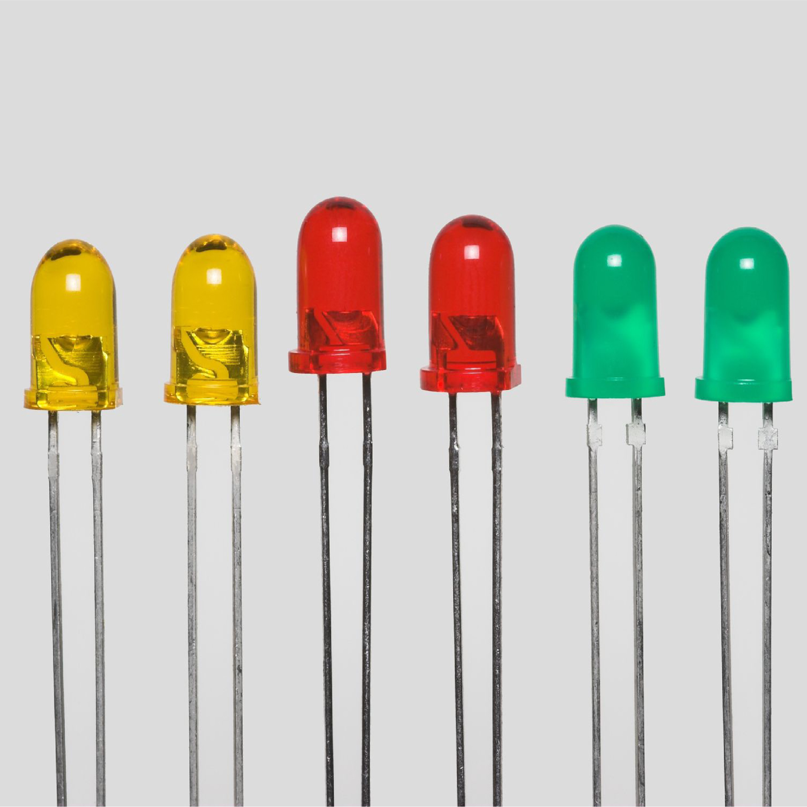
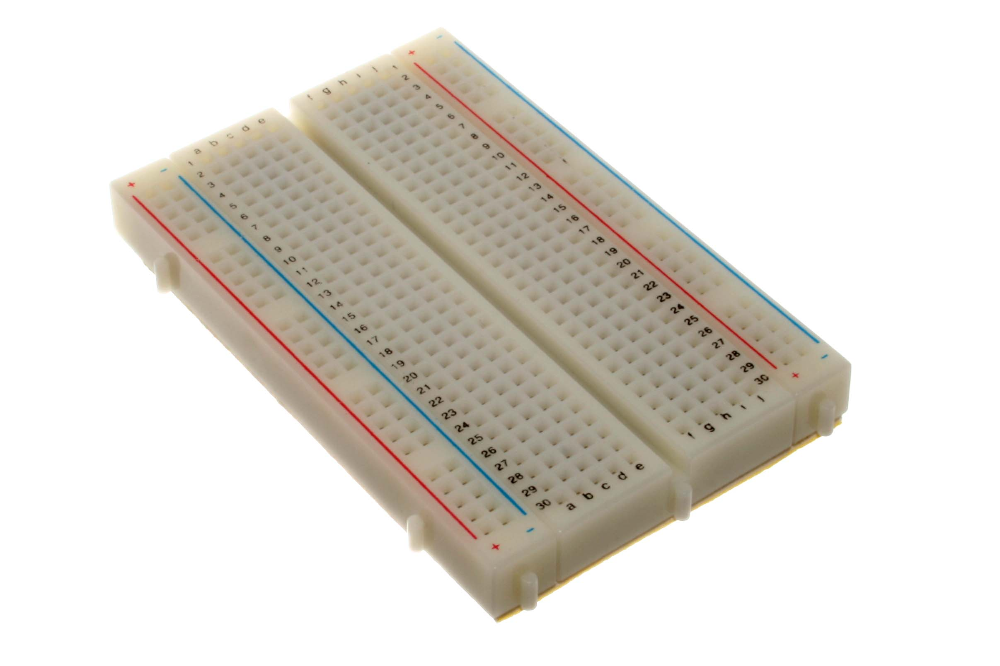

💪 Los Músculos de Arduino - ACTUADORES

💡 LEDs
Como expresiones faciales: Muestran emociones con luces de colores
😊 Verde = Todo bien
😰 Rojo = Alerta
😐 Amarillo = Esperando

🔊 Buzzer
Como una voz: Hace sonidos, música o alarmas
🎵 Puede tocar melodías
🚨 O hacer alarmas
📢 ¡Hasta "hablar" en código!
⚡ El Sistema Nervioso - CONEXIONES

🍞 Breadboard
Como una mesa de trabajo: Donde conectamos todo sin soldadura
🔴 Línea roja = Energía positiva
🔵 Línea azul = Tierra
⬜ Centro = Conexiones temporales

🌈 Cables
Como nervios: Llevan mensajes entre el cerebro y el cuerpo
🔴 Rojo = Energía
⚫ Negro = Tierra
🟡 Otros = Señales